Baden-BadenGegründet am 21. Januar 1907Langestraße 48
Maler- und Lackierermeisterbetrieb in Baden-Baden Mehr als Wände streichen.
Fassaden, Innenräume und Restaurierungen. Vom Kurhaus über das Palais Biron bis zu Ihrem Zuhause, ausgeführt von ausgebildeten Malern und Lackierern im Meisterbetrieb.
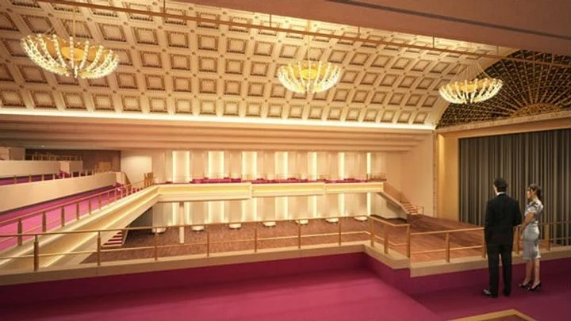
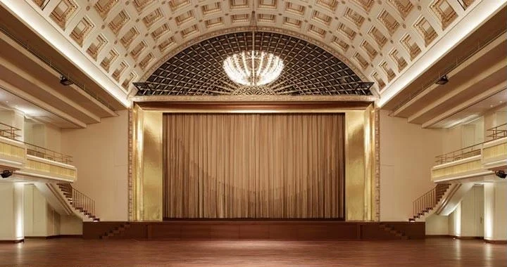
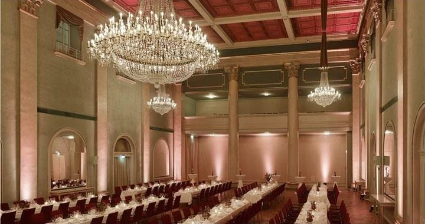
Chronik
Über hundert Jahre Baden-Baden in Farbe.
- 1907
Maler Wilhelm-Friedrich Kruse eröffnet am 21. Januar sein Malergeschäft in der Langestraße 48.
- 1915
Hinterglasmalerei des Kaiserwappens der Habsburger.
- 1935
Neuanstrich der Rheinbrücke bei Iffezheim, ein Großauftrag der Reichsbahn.
- 1940
Malerarbeiten am Schloss Favorite in Rastatt.
- 1962
Neuanstrich der Kurhausfassade.
- 1979
Vergoldung der Decke im Bénazet-Saal und Freilegung alter Fresken in der Klosterkirche.
- 1987
Restaurierung des Schlosshotels Bühlerhöhe.
- 1999
Maler- und Lackiermeister Bernhard Mannigel übernimmt den Betrieb.
- 2001
Nach über 30 Jahren wieder die Fassade des Kurhauses.
- 2011
Renovierung des Bénazet-Saals im Kurhaus.
- Heute
Für Privatleute, Unternehmen und öffentliche Einrichtungen in Baden-Baden und der Region.
Referenz
Der Bénazet-Saal, vom Gerüst zur Bühne.
Die Decke des Saals hat Kruse schon 1979 vergoldet. 2011 kam der Betrieb für die große Renovierung zurück. Ziehen Sie den Regler und sehen Sie den Unterschied.
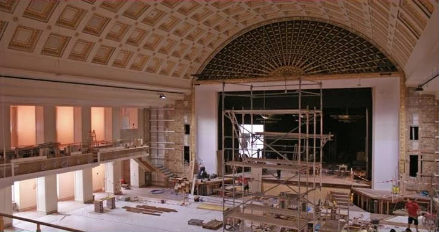
Arbeiten
Fassaden, die man in Baden-Baden kennt.
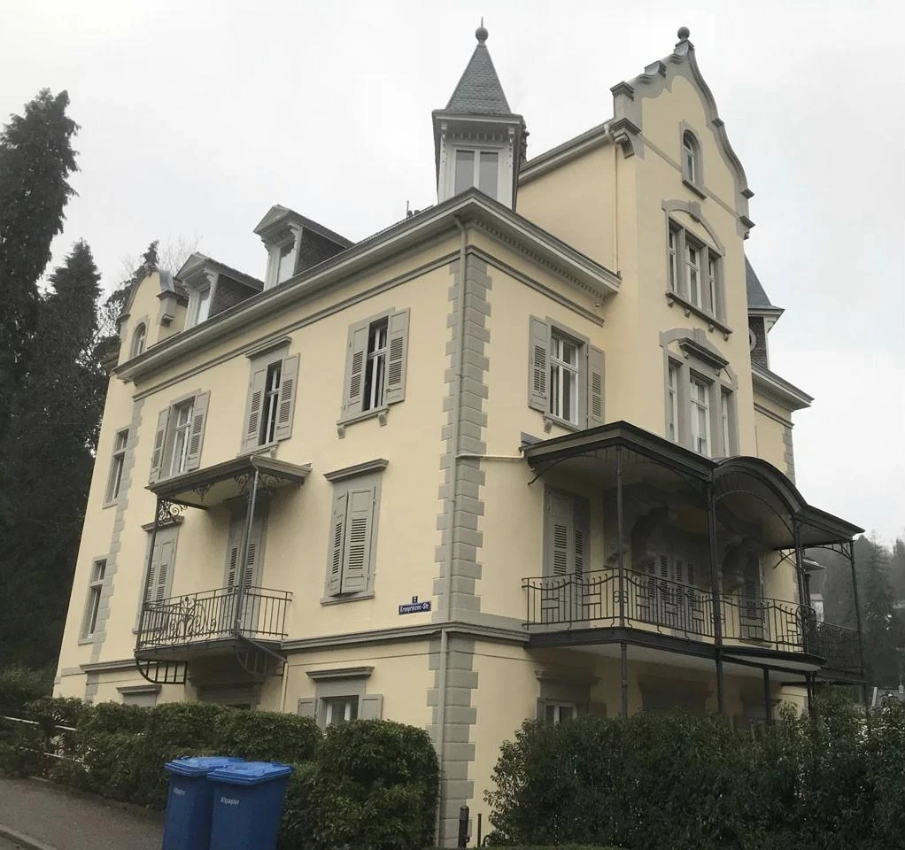
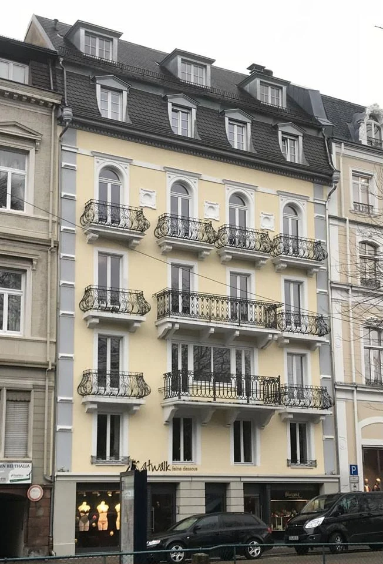
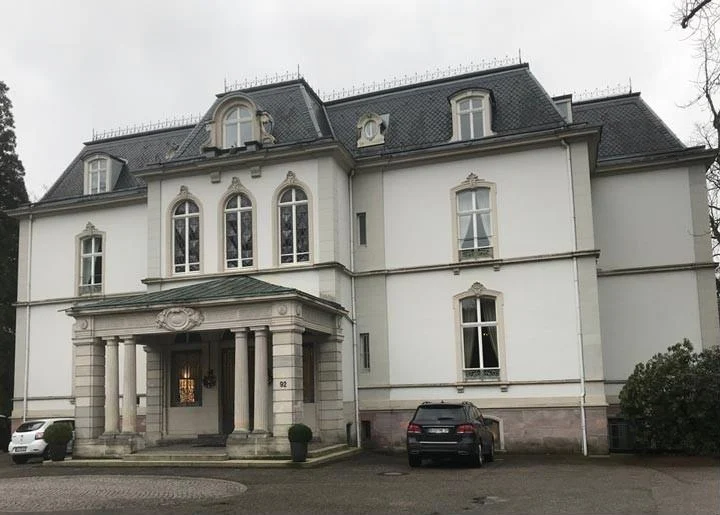
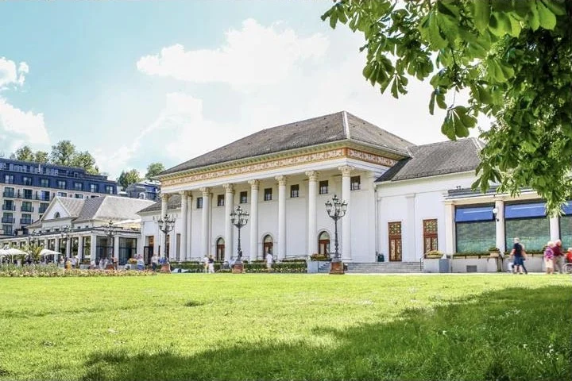
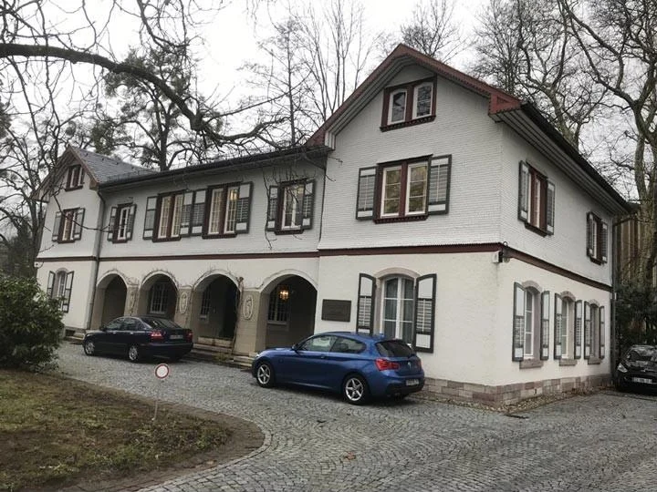
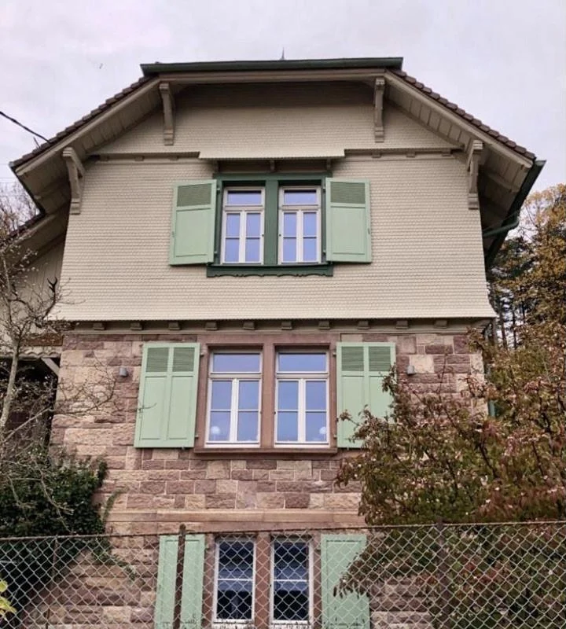
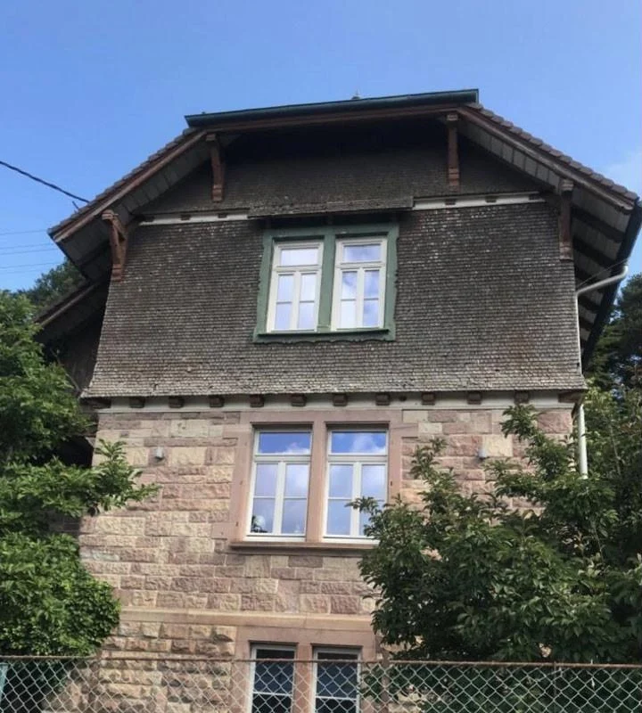
Vorher und nachher
Verantwortung sieht man.
Wir vermeiden Farben mit Schadstoffen, schonen damit Ihre Gesundheit und natürliche Ressourcen. Und wir bilden unser Team regelmäßig weiter, damit die Qualität stimmt, die man bei uns seit Generationen erwartet.
Leistungen
Was wir für Sie tun.
- Fassadenarbeiten
- Fassadengestaltung
- Innenarbeiten
- Restaurierungen
- Stuckarbeiten
- Lasurtechnik
- Marmorierung
- Lehmputz
- Bodenbeschichtungen
- Mobiles Sandstrahlen
- Graffiti-Entfernung
- Schimmelbeseitigung
- Tapezierarbeiten
- Gerüstbau
- Naturfarben-Beratung
- Betrieb
- Im Rollfeld 18
76532 Baden-Baden (Oos) - Geöffnet
- Montag bis Samstag
7:00 bis 18:30 Uhr - Ausbildung
- Wir bilden Maler und Lackierer aus.